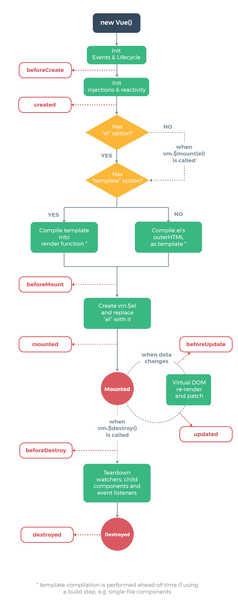

Vue 會幫我們把許多事情給處理完畢，所以我們宣告資料，設定資料位置即可。
書本範例
1
2
3
4
5
6
7
8
9
10
11
12
13
14
15
16
17
18
19
20
21
| new Vue({
el: '#app',
beforeCreate: function () {
console.log('before created ...')
},
created: function () {
console.log('created...')
},
beforeMount: function () {
console.log('before mount...')
},
mounted: function () {
console.log('mounted....')
},
beforeUpdate: function () {
console.log('before update...')
},
updated: function () {
console.log('updated....')
}
})
|
網路範例
1
2
3
4
| <div id="app">
<example id="1"></example>
<example id="2"></example>
</div>
|
1
2
3
4
5
6
7
8
9
10
11
12
13
| Vue.component('example', require('./components/Example.vue'));
var app = new Vue({
el: '#app',
beforeCreate: function() { },
created: function() { },
beforeMount: function() { },
mounted: function() { },
beforeUpdate: function() { },
updated: function() { }
});
</script>
|
hook
| hook |
作用 |
| beforeCreate |
尚未建立vue實例及掛載，所以無法將資料放在 vue實例的 data 及 methods |
| created |
vue實例已建立但未掛載，所寫的在選項物件中的屬性都可以使用 |
| beforeMount |
再掛載前，即未顯示在瀏覽器前被呼叫，想對DOM做預先處理可以在這的階段處利 |
| mounted |
el指定的標籤以掛載 |
| beforeUpdate |
數據更新前，即DOM被渲染前 |
| updated |
數據更新成，即DOM完成渲染 |
| beforeDestory |
vue銷毀前，要做的事情 |
| destoryed |
vue實例已銷毀 |
不論 Vue Instance、組件/元件(Component)，都是等待子組件準備掛載完，自己才掛上去。
資料在created以後才存取得到(意味別把資料初始化跟ajax寫在beforeCreate)。
圖例

參考資料
Vue.js 17 - 生命週期(Lifecycle)
書籍-Vuejs 2 前端漸進式建構框架